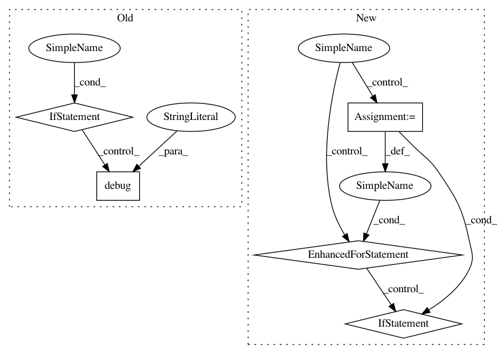

b1cfbe458c0bf123591348c54973d49297fd55ab,tools/alignments/jobs.py,Rename,_rename_faces,#Rename#Any#,1013
Before Change
rename_count = 0
for src, dst in tqdm(filename_mappings, desc="Renaming Faces"):
if src == dst:
logger.debug("Skipping rename of "%s" as destination name is same as souce", src)
continue
old = os.path.join(self._faces.folder, src)
new = os.path.join(self._faces.folder, dst)
if os.path.exists(new):
// This should never happen, but is a safety measure to prevent deletion of faces
After Change
logger.verbose("Renaming "%s" to "%s"", old, new)
os.rename(old, new)
rename_count += 1
if conflicts:
for old in tqdm(conflicts, desc="Renaming Faces"):
new = old[:-4] // Remove .tmp extension
if os.path.exists(new):
// This should only be running on faces. If there is still a conflict
// then the user has done something stupid, so we will delete the file and
// replace. They can always re-extract :/
os.remove(new)
logger.verbose("Renaming "%s" to "%s"", old, new)
os.rename(old, new)
return rename_count
class Sort():
In pattern: SUPERPATTERN
Frequency: 4
Non-data size: 5
Instances
Project Name: deepfakes/faceswap
Commit Name: b1cfbe458c0bf123591348c54973d49297fd55ab
Time: 2021-02-14
Author: 36920800+torzdf@users.noreply.github.com
File Name: tools/alignments/jobs.py
Class Name: Rename
Method Name: _rename_faces
Project Name: home-assistant/home-assistant
Commit Name: ae3973144c5bce5009fbb85ca832ae6bb8a31de9
Time: 2017-06-14
Author: adam@armills.info
File Name: homeassistant/components/zwave/util.py
Class Name:
Method Name: check_value_schema
Project Name: home-assistant/home-assistant
Commit Name: 625319846c77b37a9f2a5ffcf8d3be311cd534fe
Time: 2016-10-03
Author: pascal.vizeli@syshack.ch
File Name: homeassistant/components/homematic.py
Class Name:
Method Name: _get_devices
Project Name: deepfakes/faceswap
Commit Name: b1cfbe458c0bf123591348c54973d49297fd55ab
Time: 2021-02-14
Author: 36920800+torzdf@users.noreply.github.com
File Name: tools/alignments/jobs.py
Class Name: Rename
Method Name: _rename_faces
Project Name: idank/explainshell
Commit Name: 1fffcec16578e6bea8de6e685632b3f56713a438
Time: 2013-09-07
Author: idankk86@gmail.com
File Name: explainshell/matcher.py
Class Name: matcher
Method Name: _mergeadjacent